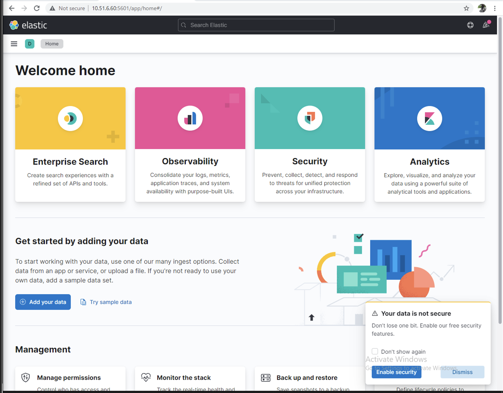
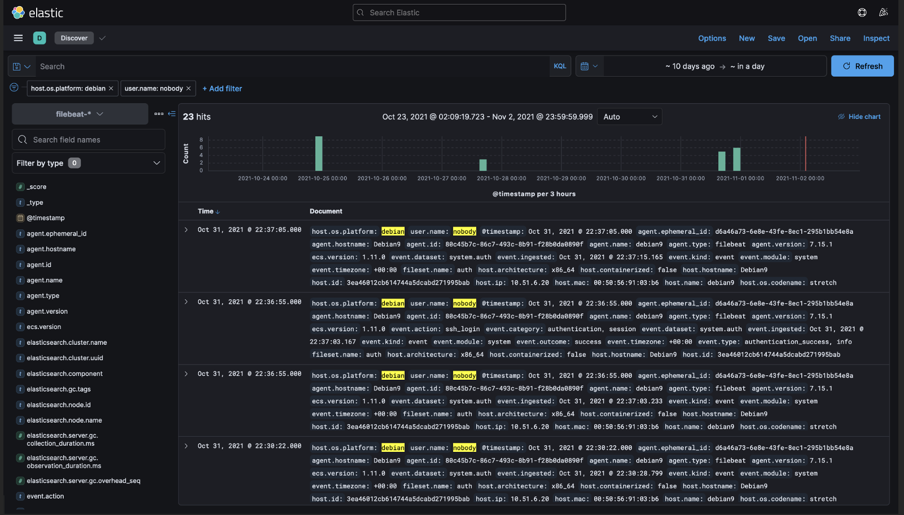
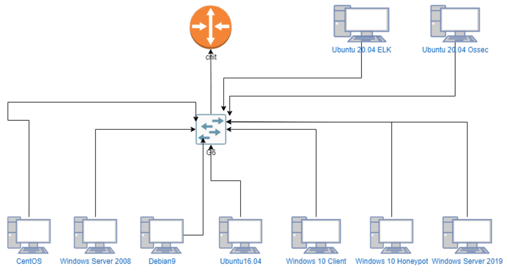
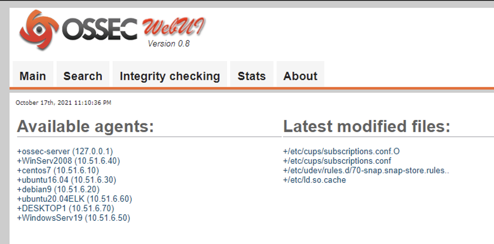

Incident Response
This lab was about incident response. It involved everything from setting up the enviorement to creation of some non-technical documents. These non-technical documents were some example policy guidelines (such as: acceptable use policy), baseline check, jumpbag list, risk register, specific plans for the loss of confidential information, specific plans for the loss of availibility of services, and specific plans for the loss of information integrity. Furthermore, Elastic Stack and OSSEC was installed on the machines other than two dedicated servers for hosting Elastick Stack and OSSEC server. Additionally a Honeypot was also configured. Lastly 3 incident response reports were made as a result of different attacks on confidentiality, integrity and availibility of the systems of the network. Below are some of the revelant screenshots and the network diagram of the lab setup. The lab enviorement was configured on a VMware vSphere server.
OS: Windows Server 2008, Windows Server 2019, Windows 10, CentOS 7, Debian 9, Ubuntu 16.04, Ubuntu 20.04
Tools: OSSEC, Elastic Stack (Elasticsearch, Kibana, Beats, and Logstash), Honeypot (KFSensor)
   